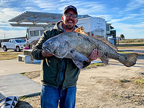

From Pulpit to Pixels:
A Journey of Faith, Family, and Finding My Path
I was born August 15, 1980 in Bay City, TX to two Southwestern Assemblies of God College graduates. They were living down in my father's home town because that's where dad had the best ministry prospects at the time. The ministry doesn't pay a lot, and it paid even less back then. So, they were living in a house they intended to buy that my grandfather was building. It wasn't quite finished, and you might question why a family of four with a fifth on the way would live in a house under construction. Dad drove me past some of the other houses last year they lived in previous to the one I was supposed to come home to and described the problems in those. At least the house under construction was warm, dry, and had running water.
Dad was earning money as an electrician and had to get up at 5 am to be at work at 6 or 7. Mom would get up with him and make the coffee, cowboy style on the stove (I'm not sure why. Maybe there wasn't money for a coffee machine.) That morning mom fell back to sleep after she started the coffee and the bacon grease they kept in a metal coffee can on the back of the stove caught fire. So my mom, eight months pregnant with me, my dad in his tighty whities, and my two sisters ended up running to the neighbors to call the fire truck. The house didn't burn to the ground, but they didn't have homeowner's insurance for all the smoke damage. So, dad went down and bought a brown and white three bedroom mobile home.
Well, all of that led to a life of moving around following electrical and church opportunities as they came up. We ended up in Midlothian, TX where mom and dad decided it was best to stop moving when I was five years old. Life was filled with church, and not just any church - Pentecostal Church. For the uninitiated that's the one where the preacher speaks loudly and passionately and sweats a lot. The congregation 'Amens' loudly, speaks in tongues, and sometimes runs or falls down. This has an effect on many of the young people in a church like that, and I was one of them. I found myself at Dear Ol' Southwestern as well studying to work with the youth of A/G churches. I did that work for a while, but found after I married that the demands of family and a church job often came into conflict with each other. I've tried a few other things such as carpentry, investment banking, and teaching. My latest endevor is to work as a software dev. That's what led me here. My dad's work led him to automation controls, and he would rub shoulders with TSTC graduates, and he would mention to me sometimes about how impressed he was with them. So, here I am, a bit later than I should have been, but I'm looking forward to what this course of study will bring me. Thanks for reading. By the way, my name is JohnMichael. Not John - JohnMichael. If you call me John I probably won't correct you because I just get tired of that, but I will think you don't listen well enough to care about what I'm telling you. I'm married to my wife of almost 16 years, Jamie, and we have three wonderful children - Elliot(13), Grant(11), and Norah(8).